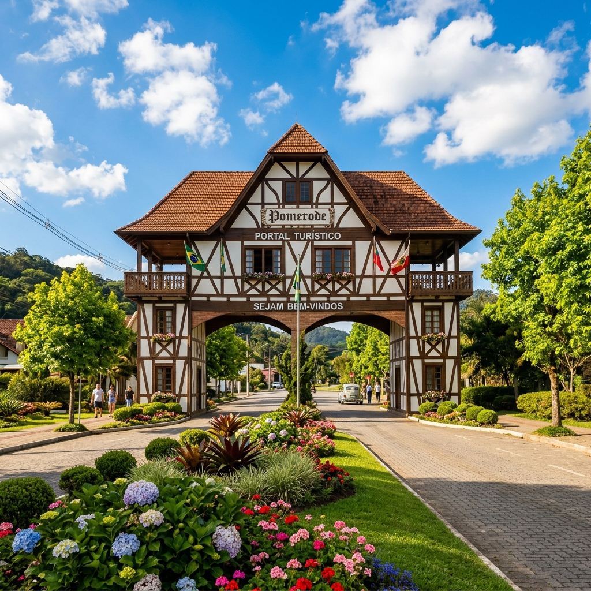
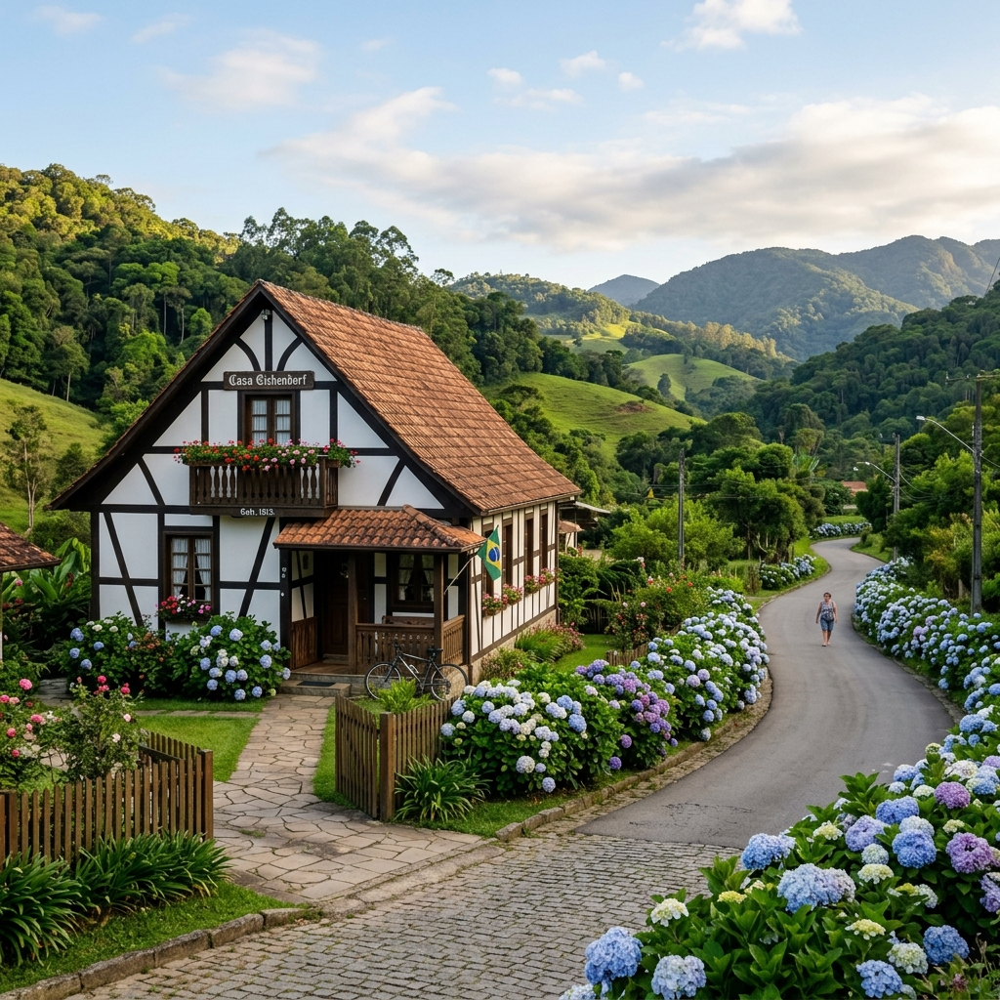
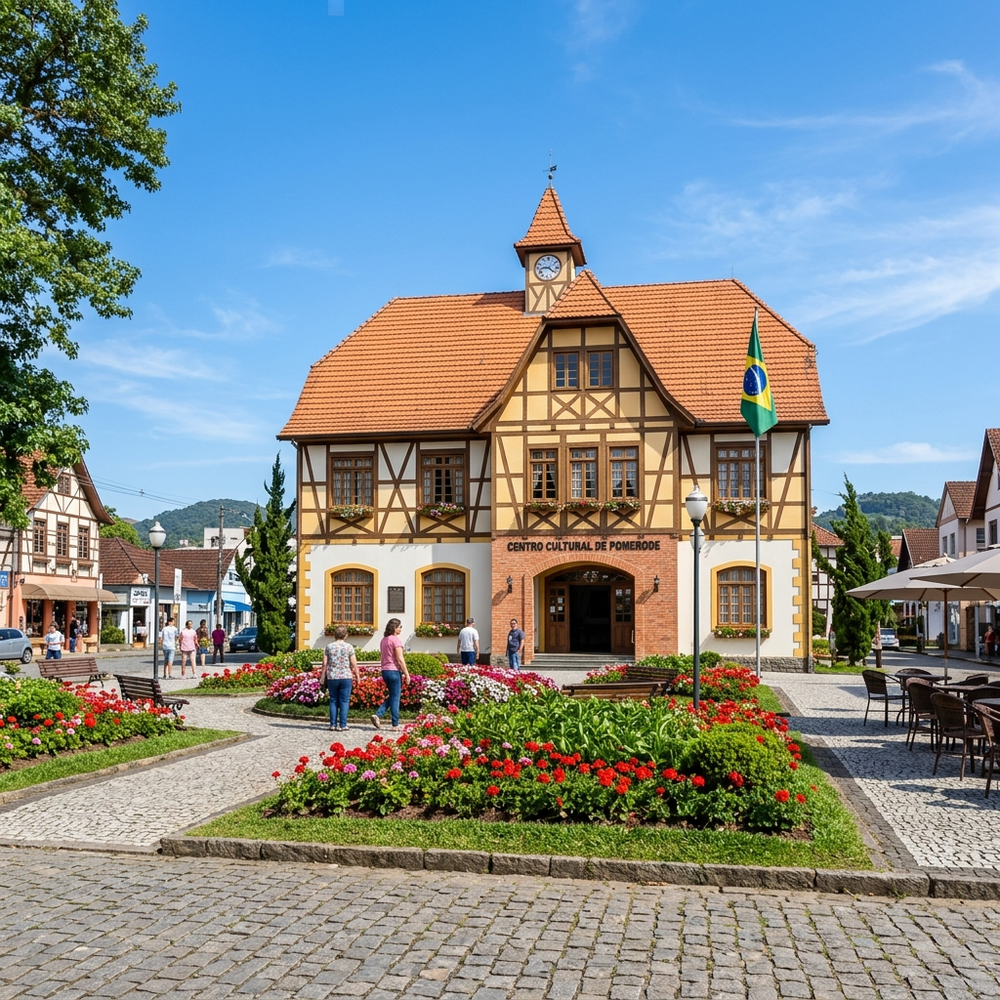

Portal Turístico
O icônico pórtico de entrada da cidade, construído no clássico estilo enxaimel alemão e cercado de belíssimos jardins floridos.
Guia exclusivo da cidade mais alemã do Brasil. Conheça a história, a cultura e a beleza do nosso vale europeu com elegância e praticidade.
Explore o melhor da cultura, da arquitetura enxaimel e das paisagens europeias em Pomerode.

O icônico pórtico de entrada da cidade, construído no clássico estilo enxaimel alemão e cercado de belíssimos jardins floridos.

O maior acervo de construções enxaimel fora da Europa. Um passeio rural inesquecível pela história e culinária típica alemã.

O coração cultural de Pomerode, reunindo museus, artesanato local, eventos temáticos e a belíssima arquitetura colonial alemã.